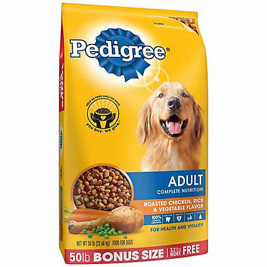
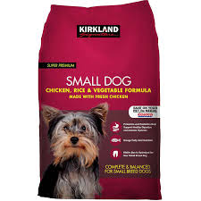
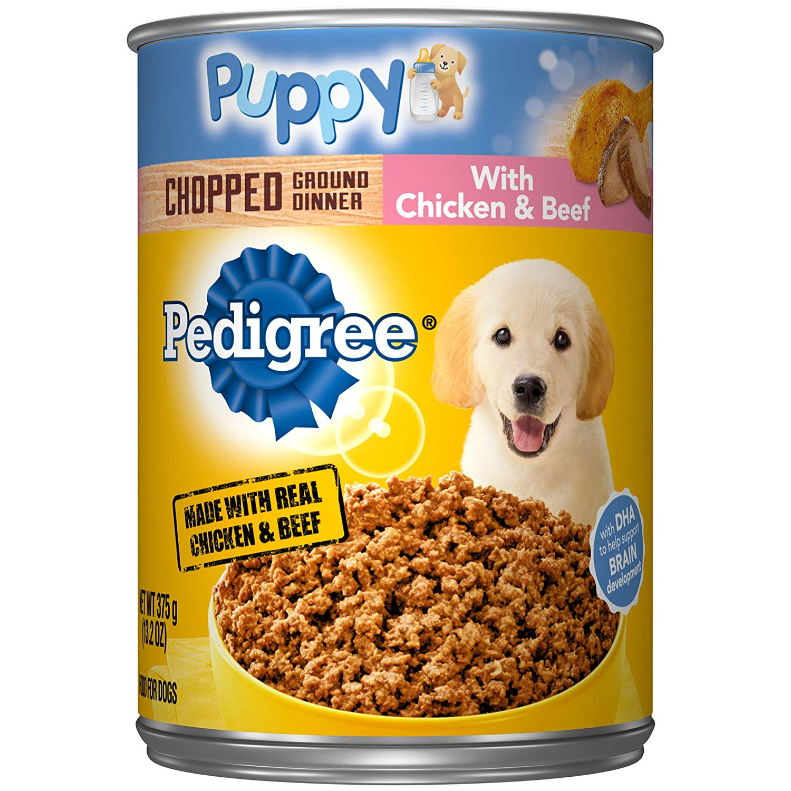

Pedigree Adult Pouch sa mesnim komadićima su namenjene odraslim psima od 1 do 7 godine starosti. Jednostavno serviran obrok po meri malih i srednjih rasa. Receptura sadrži sveže meso koje nije bilo prethodno tretirano ili smrznuto. Posebna ulja za održavanje zdrave kože i dlake. Vitamin E i minerali za potporu prirodnom imunitetu..
Najbolje od nas za vaše pseće visočanstvo!
Potpuna hrana bez žitarica za pse malih rasa, svih starosnih kategorija. Piletina iz slobodnog uzgoja sa slatkim krompirom i biljem. Pažljivo izbalansirana i nutritivno bogata hrana s obiljem lako svarljivih belančevina.
Pedigree Junior vlažna hrana je namenjena štencima između od 1 do 12 meseca starosti. Sadrži sve potrebne hranjive sastojke kako bi štenci izrasli zdravi i snažni. Ova razvojna faza života zahteva posebnu ishranu, Healthy Start formula to omogućava: potpuna i uravnotežena hrana, lako svarljiva, s optimalnom odnosom kalciijuma i fosfora. Vitamin E i minerali za potporu prirodnom imunitetu. Receptura sadrži sveže meso koje omogućava kvalitetnu ishranu u ukusnim obrocima.
